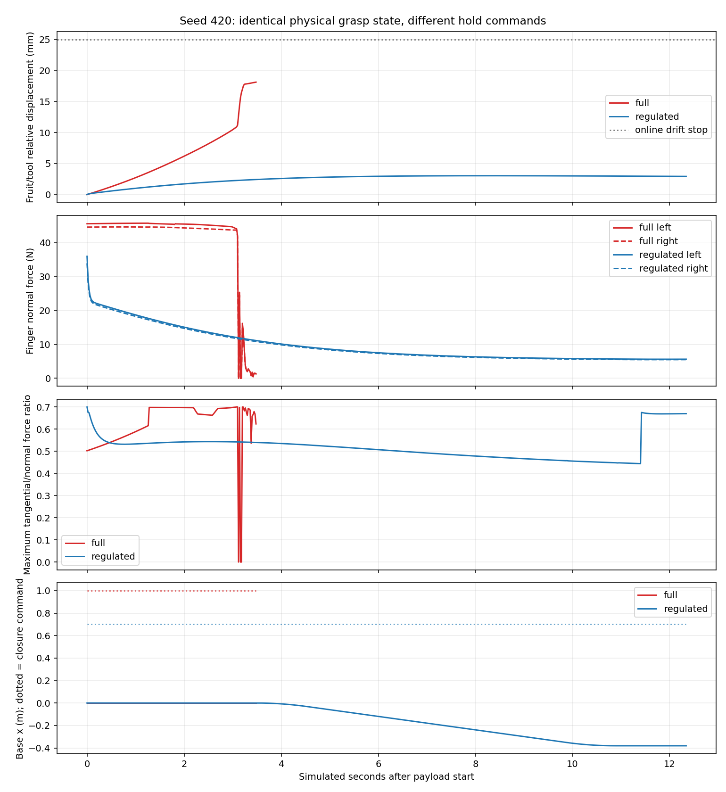
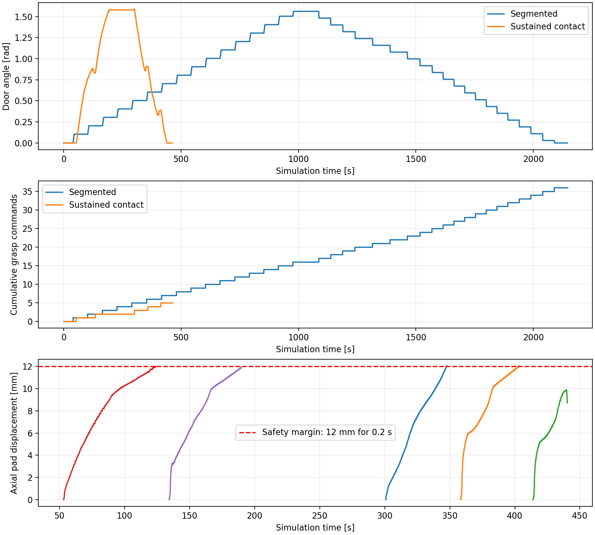
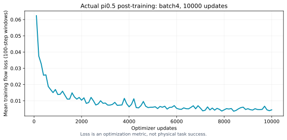

本项目在MuJoCo中构建Husky A200、原版UR5、Robotiq 2F-85和机身RGB-D/腕部RGB组成的移动操作系统，实现开门入室关门、十果分类、三本不同尺寸书本入屉并返航。系统采用分层混合架构：A*和轮式控制负责导航，FSM组织长程任务，几何规划、IK和接触反馈执行操作；π₀.₅输出驻车机械臂动作，作为独立学习技能接入。
三个传统任务均有连续物理成功实例。各自冻结协议下，门任务10/10、历史十果分类2/10、新散落三书4/10。已执行水果抓取抬升为53/57，说明单项抓取与完整长程可靠性应分开评价。VLA已完成batch4、10000更新后训练与真实闭环执行，十果桌面指定目标抓起保持的固定验证为14/30。展示视频按数量整理，包含重复初态，不能替代这些评测结果。
本文将“已证实根因”“有界改进”“未解决限制”分别说明；不把局部成功或视频展示比例写成完整任务成功率。
| 任务 | 完整动作链 | 整轮成功条件 |
|---|---|---|
| 门 | 门外约5m接近→抓把手拉开→整机通过→内侧关门 | 进入房间且门关闭、停稳 |
| 水果 | 距桌约5m接近→随机10果连续抓放 | 三类均出现、同类几何有差异，全部正确入对应标识筐 |
| 书本 | 距桌约5m接近→面积排序→三层收纳→关闭→返航 | 三书分别正确入屉，抽屉关闭，机器人回到初态容差内 |
运行中仅通过正常执行器和接触改变机器人、物体、门与抽屉状态。初始化和独立scratch运动学搜索可以设置状态，但不能把它们作为完成操作的动作。完整任务、单件技能、checkpoint续作和展示集合分别记录。
本地Python3.10、MuJoCo3.6.0；服务器OpenPI为独立Python3.11环境。物理步长0.002s，implicitfast积分、椭圆摩擦锥。没有更改系统驱动或用UR5e替代原版UR5。
| 对象 | 关键参数与实现 |
|---|---|
| Husky | 四个真实轮关节/速度执行器、自由基座；轮半径0.1651m、轮距0.555m；惯性与尺寸由原描述适配 |
| 原版UR5 | 肩高0.089159m、上臂0.425m、前臂0.39225m；六轴位置控制、限位与力矩界 |
| 2F-85 | 联动四连杆与真实指垫接触；候选抓取保留有效开口约78mm，书本夹持厚度而非强行夹跨整本宽度 |
| 相机 | 机身理想RGB-D、腕部虚拟RGB；有内外参与反投影，不声称完整D435i双目、IR、IMU或真实噪声 |
| 门 | 锁边同轴双把手；门板1.56m×2.0m、18kg，净门洞1.57m；被动铰链0–1.65rad |
| 水果 | 苹果复合椭球、香蕉三段胶囊、橘子椭球；十果4/3/3随机摆放，scale0.88–1.08 |
| 三书 | 120×80×15、180×120×20、240×160×25mm；主体质量0.15/0.30/0.50kg，按平面面积排序 |
| 抽屉 | 三独立被动滑轨、0–0.27m行程，真实把手、底板、侧壁、关屉接触 |
三书面积比为1:2.25:4，并非三个近似相同小物体。A4/A5/A6仅是曾测试的扩展尺寸，不是任务硬要求。新三尺寸在评测前冻结，旧失败保留；不能将不同尺寸协议直接解释为单因素成功率提升。原模型来源、固定提交、文件校验与第三方许可见configs/model_sources.lock.json和third_party/。
flowchart TD
FSM[任务FSM与有界恢复] --> NAV[占据栅格A*及轮速跟踪]
FSM --> PER[RGB-D目标估计 / 声明的Oracle专家]
PER --> GEO[抓取候选、底盘操作位姿、约束轨迹]
GEO --> IK[多初值DLS IK与持物碰撞路径]
FSM --> VLA[双RGB、实测状态、语言 → π₀.₅]
VLA --> CHUNK[绝对关节动作块与安全执行]
IK --> CTRL[限速参考、一次重力补偿、执行器]
CHUNK --> CTRL
NAV --> PHYSICS[MuJoCo真实轮地及物体接触]
CTRL --> PHYSICS
PHYSICS --> CHECK[接触、滑移、容纳和任务评分]
CHECK --> FSM
导航使用外形膨胀后的二维占据栅格、A*搜索与路点跟踪。差速映射为ωL=(v−ωb/2)/r、ωR=(v+ωb/2)/r；Husky可滑移转向，不能直接横向平移。
RGB-D使用颜色连通域、深度反投影、PCA方向与几何候选。门、抽屉和部分书本策略明确使用Oracle几何，接触/容纳亦有仿真评分辅助；不能称完全由图像自主推理。
机械臂采用MuJoCo雅可比DLS IK、多初值及历史解搜索，检查关节余量、碰撞和连续性；实际关节运动经过限速参考与一次重力补偿。持物路径不仅检查末端和机械臂，还传播真实书本偏移检查整个扫掠体。规划中的物体位姿传播只存在于独立scratch数据，不写回实时仿真，不是隐藏焊接。
FSM定义导航、观察、选择、规划、接近、抓取、搬运、放置、验证、恢复、返航、成功与失败状态。每状态有超时、物理判定及有限重试；失败原始类别需穿透上层异常包装，避免恢复分支失效。
早期约67.4mm跟踪误差发生于下降阶段；数值IK收敛并不代表物理轨迹可执行。A4侧抓候选曾有腕/掌与桌面约41.7mm穿入，因此正确拒绝。增加长短轴候选只能补齐姿态搜索，不能消除几何冲突。
采用的措施是：从桌面上方直接下抓改为真实推移到边缘，再沿书厚侧夹；调整操作底盘位姿；预抓取到位确认；检查腕部、相机支架、桌面和夹爪退出空间。物体尺寸、摩擦及驱动力没有为通关而极端修改。
旧滑移量直接比较世界坐标向量：||(p书−p工具)(t)−(p书−p工具)(t0)||。工具旋转时，刚性夹持也会改变该向量，产生假滑移。
修复使用工具局部坐标：p局部=R工具ᵀ(p书−p工具)。原25mm/0.35rad及连续三次异常规则保留，双侧接触检查保留。在原触发点，同一回合旧量25.032mm、新量2.834mm，双侧接触为真，直接证实坐标系误报。
修复后越过了原中断点，但没有立即宣称成功；后续真实出现导航超时、书撞前板和把手、抽屉提前关闭等问题，分别继续处理。第三书重新实抓的连续续作最终成功：抬升92.045mm，最大工具坐标漂移2.839mm，双侧比例1.0，第三屉最终开度9.317mm，返回误差约64mm/30.4mrad。该回合由checkpoint开始，不能计成从5m出发的新完整三书成功。
这些措施带来了多次真实完整三书开发成功，例如200007/200008/200009三个开发回合约1210.074/1210.288/1206.054s。新冻结散落协议仍只有4/10：五次推书跟踪失败、一次持书路径碰撞预检失败。正确结论是“突破了完整流程并定位了剩余瓶颈”，不是“随机三书已经100%”。
证据：evidence/issues/third_book_fix.json、book_geometry.json、book_swept_path.json、books_formal_summary.json。
旧失败轨迹在失去接触前仍有约45/44N法向力，不能据此认定稳定。局部低速倒车实验中，臂目标误差和底盘加速度很小，但香蕉相对工具持续漂移、滚转，接触切/法向比接近摩擦边界。证据更支持曲面接触布局和满闭合持续挤压造成的滑移/滚转；不能简单归因于车速过快。
排查尝试保留了多候选、降低抓取高度、低速、摩擦试探等失败结果。仅提高摩擦或更慢动作未解决原满闭合问题，故未以“黏住物体”的方式修改正式材质。
采用“建立抓握后调节保持闭合量”、接触与相对位姿反馈、平滑限速、有界停止复核。seed420局部对照如下，模型物理参数相同，不能视为多种子成功率：
| 局部保持/倒车实验 | 满闭合1.0 | 保持0.70 |
|---|---|---|
| 局部结果 | 保持阶段失败 | 通过约0.381m倒车 |
| 最大相对位移 | 18.120mm | 3.038mm |
| 最大相对旋转 | 0.15879rad | 0.03992rad |
| 录像范围 | 已持物初态，3.6s | 已持物初态，12.4s |
此对照支持保持控制的局部有效性，不证明所有香蕉或十果任务已可靠完成。部分更复杂转弯仍失败，需要同时考虑接触点、抓取深度和路径动态。独立VLA中的香蕉失败也不能仅据外形就认定缺训练数据。

证据：evidence/issues/banana_full_closure.json、banana_regulated_hold.json及原始接触轨迹。成功视频中终端仍夹持，失败保护也可能在接触尚未完全丢失时触发，应区分“验证失败”与“已肉眼掉落”。
早期门把手几何不符合常见锁边结构，后续改为两侧同轴锁边把手，并单独冻结新协议，不沿用旧几何的统计。
原控制把圆弧切成许多固定小段，每段释放、收臂、Dock、重抓。改为同时参数化底盘与把手圆弧：p底盘(θ)=p门轴+Rz(θ)[法向偏置,切向偏置]，底盘沿可执行方向运动，机械臂用实测底盘和门角修正末端轨迹。
正常阶段持续闭合；仅在指垫边缘余量、接触丢失、跟踪误差、载荷或碰撞条件触发时，停车、卸载伺服储能、释放、复核并有界重抓。释放后以实际位姿重新选择剩余可行圆弧，不强制返回过时理论Dock。最终张爪同时沿门法向退手45mm，减少擦碰回弹。
| 同seed2101完整物理任务 | 原分段方案 | 协同持续抓握 |
|---|---|---|
| 执行器真实闭合边沿数 | 36 | 5 |
| 仿真时间 | 2144.860s | 462.336s |
| 完整评分 | 通过 | 通过 |
同初态局部效率对照中，抓取次数减少86.11%，仿真时间减少78.44%；不能将该单回合对照当多种子统计。最终正常门协议新保留种子96001–96010全部成功，均时451.237s。仍使用1.57m门洞、Oracle门轴/把手几何；不是狭窄住宅门或纯视觉结果，也未做到开/关各仅一次抓握。

证据：evidence/issues/door_contact_acceptance.json、door_efficiency_comparison.json。
位置误差跨越约23mm阈值时，追位置和调航向反复切换；载荷模式还可能把纯转向改成缓行。当前控制器没有积分项，不能写成积分饱和。
措施包括状态滞回、精密Dock与载荷运输分离、轮速变化限制、实测速度加连续2s稳态判定、局部预停靠及运动原语尝试。严格配对结果由旧空载1/10、带载1/10，改善到新空载10/10、带载6/10。困难横向工况仍失败；后续某些连接器在同预算下没有提升，未合入生产默认。没有以扩大位置容差或延长预算代替修复。
隔离实验中机器人停在5m外，旧场景苹果180s仍落桌，说明该例不是机械臂碰落。复合水果直立初态没有自然静力稳定姿态。新协议在独立标定台真实静置600s，提取稳定姿态用于新MJCF初始化；没有运行中搬动物体或修改质量/摩擦。新同参数场景静置1800s，十果均留桌、最大中心位移约0.4545mm。它是新初始化分布，不能与旧协议混算控制器提升。
默认近面约66.71mm，苹果距腕相机约76.12mm而前表面越过近面，图像出现被裁空心轮廓。新虚拟观察版本将near设5mm，并记录真实NVIDIA/Mesa渲染器；物体几何、惯性、碰撞和相机位姿不变。已有动作经正常控制器重放生成新双视角，旧视图不覆盖，不把新视图计成新场景。5mm只是理想渲染近面，不代表真实D435i最短测距。
上层导航曾把gripper_slip包装成path_planning，使重抓恢复无法触发。修改为仅对导航自身错误重规划，夹持、IK、超时保留原类别。
数据早期混有高层目标、限速reference和实际ctrl。Schema3统一监督六轴高层绝对目标+夹爪，其他量独立记录；观测/动作时刻、插值和执行器重放显式校验，避免归一化正确但控制语义不一致。
输入为机身RGB、腕RGB、六轴实际关节+夹爪状态和语言；缺失右腕视角用mask=false。隐藏物体位置不进入模型输入。深度用于专家/分析，不直接当原生四通道输入。
动作是ur5_absolute_joint_goal_v1，七个有效通道；模型内部保留32维、10步动作块、5Hz。执行器做关节界、速度/加速度约束及一次重力补偿，每个动作前缀执行后重观测。当前显式bounded_projection_v1仅投影夹爪小幅越界，严重异常仍拒绝。
实际训练405片段/25517帧，旧单果121片段、新3果32、新5果70、新10果182；十果对应91次单目标父操作和34个训练布局，不是91次完整清空十件。旧20%/新80%加权采样，十果预期采样质量约51.25%。训练/验证/测试按场景隔离；norm只用train，动作统计匹配10步chunk和尾部clamp。
训练batch4、10000有效更新，warmup500，学习率2.5e-5→2.5e-6；最终9999完整保存和零更新重载通过。两段训练墙钟合计约2.71h，最终验证flow loss0.01256467。loss不是物理成功率。
最新十果桌面固定验证：苹果2/10、香蕉6/10、橘子6/10，共14/30，涉及6个验证布局与预声明噪声，未用正式test。当前验证只要求指定目标抓起保持，不包括放置、5m导航或完整十果FSM。每类成功视频展示集合不能用于重新估计该固定结果。

| 层级 | 实际结果 | 适用范围 |
|---|---|---|
| 传统水果抬升 | 53/57；苹果20/23、香蕉15/16、橘子18/18 | 已执行尝试，含重试、提前终止，非100件独立抓取 |
| 传统完整门 | 10/10；成功均时451.237s | 正常锁边把手、Oracle、宽门协议 |
| 传统完整十果 | 2/10；成功均时1771.290s | 历史布局，3000s冻结协议 |
| 传统新散落三书 | 4/10；成功均时1207.823s | distinct_v2，三尺寸、Oracle、返航 |
| VLA十果桌面单目标 | 14/30；成功均时11.3s | 6验证布局，抓起保持，无放置 |
| 展示资料 | 传统70片段；VLA30案例 | 按数量选取、重复/历史版本，非独立成功率 |
完整成功需所有阶段都通过；单次抓取可靠不代表十次连续抓放可靠。例如独立同分布的理想示例中，单果完整链路85%时十果全过约19.7%；这只是概率说明，不是对实际相关失败的拟合模型。
当前源码导出在本地实际258/258测试通过（96.84s）。这证明所覆盖模块与接口回归，不代替任务可靠性。原始data.warning与隔离进程文本日志分开报告；历史全局Linesearch提示不能直接归因到某个成功回合，也不能因计数零就忽略文本提示。
可由现有证据支撑的工作包括：原版UR5整机与真实接触系统；工具坐标下的滑移检测；考虑门约束的底盘/机械臂协同；曲面水果保持控制对照；持物几何扫掠与路径一致执行；自然静置初态与相机质量审计；动作语义一致的双视角数据及真实π₀.₅训练/推理链路。
尚未证明：通用带载Dock全通过、随机十果高可靠性、随机三书高可靠性、纯视觉门操作、VLA优于同条件专家、VLA完整十果分类和真实机器人部署。
下一步应优先使用同初态/同评分专家对照，定位VLA接近与闭合失败，补目标接触和纠错数据；保持训练/推理语义与真实物理重放一致。新策略需冻结后使用未曝光种子评测，不能通过增加已成功初态重复视频替代泛化验证。
核心代码为src/robot_exam/{control,navigation,perception,tasks,vla,data}；场景构建为scripts/build_stage2.py、build_tasks.py；任务入口run_stage7_isolated.py；VLA入口openpi_ur5_train.py、serve_openpi_original_ur5.py、evaluate_multifruit_policy_phase.py。
GitHub发布目录只包含清理后的代码、小型模型、许可证、技术总结、统计证据和代表录像，不包含账号认证、环境缓存、权重或完整原始数据。完整资料及视频集使用另行下载入口，保留原始评分与来源。公开首页不使用个人考核背景作为项目名称。